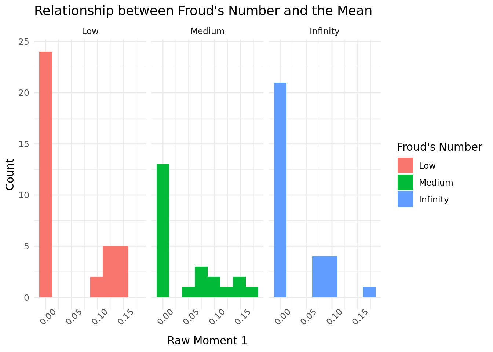
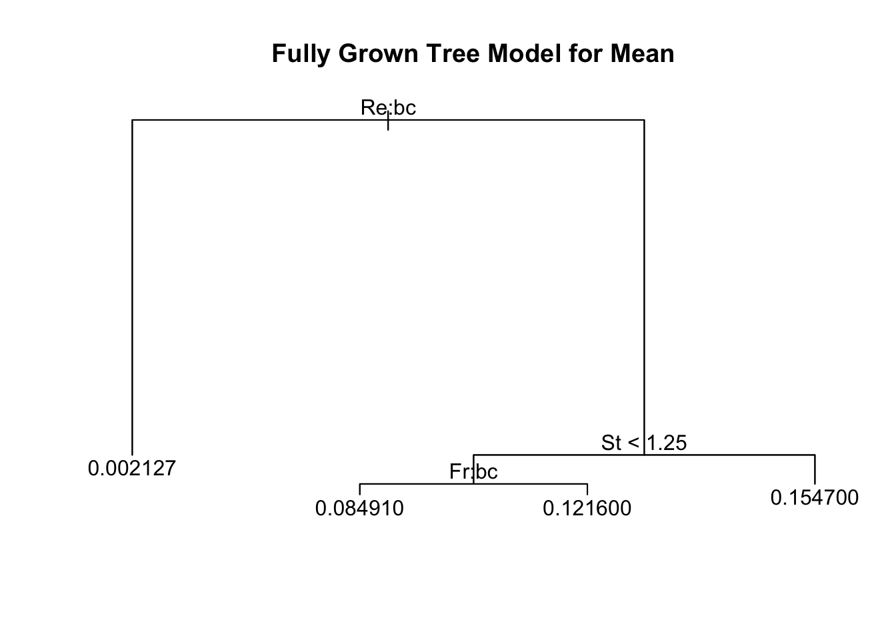

library(tidyverse) # datawrangling
library(tidymodels) #modeling steps
library(knitr) # nice output
library(boot)
library(patchwork)
ggplot2::theme_set(ggplot2::theme_minimal())
train <- read_csv("data/data-train.csv")
test <- read_csv("data/data-test.csv")STA325 Case Study
Packages/Data
Investigating Relationship Between Mean and Froude’s Number
| Froude’s Number | Count |
|---|---|
| 0.052 | 36 |
| 0.300 | 23 |
| Inf | 30 |
Similar to Reynolds number, this number is somewhat non-continuous as there is only three buckets for the number. Therefore I am going to make it a categorical variable to help interprebaility. For instance, how do we interpret Infinity? Instead I will make
0.052 ==
Low0.300 ==
MediumInf ==
Infinity

It seems hard to distinguish what affect Froud’s number has on the mean from this plot.
Simple Linear Regression
| Mean | Variance | Skewness | Kurtosis |
|---|---|---|---|
| 0.000218 | 37239.52 | 2.655954e+12 | 1.899136e+20 |
It is clear that the using a Simple Linear Regression model to predict anything but the mean is not a good idea as the performance is not good. Nonetheless it serves as a good baseline for predicting further complex models.
Polynomials
Using 2nd degree polynomial models while also predicting the moments with Froud’s and Reynolds’ Numnbers, we get lower MSE’s for all four moments, however these MSEs are still outrageously high for skew and kurtosis, indicating that using polynomials would also not be the best way of predicting the moments.
Inference
Stokes Number St
Stoke’s Number quantifies the particle’s characteristics i.e. it’s size and density. Let’s see how this parameter effects the distribution of the final turbulent space.
Estimate Std. Error t value Pr(>|t|)
(Intercept) 0.02727949 0.008642157 3.156561 0.002193806
St 0.01525690 0.007438449 2.051086 0.043266692Using a linear model with only Stoke’s predictor, we see that the predictor is statistically signifcant for an alpha level of 0.01. We can interpret it’s coefficient as for every one point increase in Stoke’s number, the mean of the final turbulent distribution increases by about 0.015 .
[1] "Variance Output" Estimate Std. Error t value Pr(>|t|)
(Intercept) 50.13945 41.02933 1.222039 0.2249935
St 49.26535 35.31463 1.395041 0.1665549[1] "Skewness Output" Estimate Std. Error t value Pr(>|t|)
(Intercept) 360097.4 341169.4 1.055480 0.2941282
St 457487.7 293650.2 1.557934 0.1228792[1] "Kurtosis Output" Estimate Std. Error t value Pr(>|t|)
(Intercept) 2594695036 2849353546 0.9106259 0.36500867
St 4186989858 2452486167 1.7072430 0.09134354Looking at the summary for a Linear Model predicting the variance of the final distribution with Stoke’s Number, we can see that it has essentially no affect on the variance, skewness, or kurtosis of the final system. Overall, this parameter does not seem to have a great impact on the final resulting distribution in general. This can be made clear by visualizing it’s relationship:

Reynold’s Number Re
Reynold’s Number Re in our data is a number that quantifies the initial fluid turbulence of the system.
Mean Model
Estimate Std. Error t value Pr(>|t|)
(Intercept) 0.1120959 0.003342233 33.53924 3.623490e-51
ReMedium -0.1091886 0.004477683 -24.38507 2.139226e-40
ReHigh -0.1117449 0.005421817 -20.61024 5.032396e-35Looking at the output, it is clear that Re has a statistically significant relationship with the outputting mean of the distribution for each of its levels. However, the true effect is not very large. However, we can say that when Re == Low , the resulting mean is 0.11 points higher on average than Medium or High. When Re == Medium and Re == High the resulting mean is around 11 points lower than the baseline when Re == Low. Therefore, it is clear to see that Re has an inverse relationship with the mean of the resulting distribution.
Variance Model
Estimate Std. Error t value Pr(>|t|)
(Intercept) 265.3472 41.58665 6.380587 8.558301e-09
ReMedium -265.2103 55.71481 -4.760139 7.751474e-06
ReHigh -265.3418 67.46246 -3.933178 1.693051e-04Similar to the Mean model, if we glance at the output, it is clear that Re has a statistically significant relationship with the outputting mean of the distribution for each of its levels. The true effect in this case is relatively larege. When Re == Low, the resulting variance is 265.45 times higher on average than Medium or High. When Re == Medium or Re == High the resulting variance is around 265 times lower than the baseline when Re == Low. Therefore, it is clear to see that Re has an inverse relationship with the variance of the resulting distribution. In other words, a higher Reynold’s number results in a lower varied distribution.
This follows the intutition that when a gravitational force is higher, clusters will form at a higher rate resulting in a lower variance number.
Random Forests
Evaluating Our Models

The optimal degree polynomials for predicting mean, variance, skew, and kurtosis are all 2 for Stokes Number.